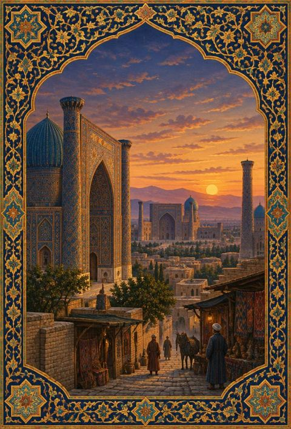
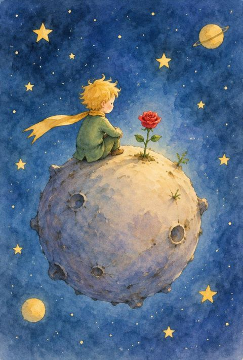

Kitoblar katalogi
Barcha kitoblar ro'yxati. Qidiruv orqali kerakli kitobni toping.
| # | Rasm | Nomi | Muallif | Janr | Yil | Reyting | Holati |
|---|---|---|---|---|---|---|---|
| 1 |  | O'tkan kunlar | Abdulla Qodiriy | Badiiy | 1926 | 4.9 | Band |
| 2 | Kecha va kunduz | Cho'lpon | Badiiy | 1936 | 4.7 | Mavjud | |
| 3 | Boburnoma | Zahiriddin Bobur | Tarix | 1530 | 4.8 | Mavjud | |
| 4 |  | Sariq devni minib | Xudoyberdi To'xtaboyev | Bolalar | 1968 | 4.6 | Band |
| 5 | Ufq | Said Ahmad | Badiiy | 1974 | 4.5 | Mavjud | |
| 6 | Mehrobdan chayon | Abdulla Qodiriy | Badiiy | 1929 | 4.7 | Mavjud | |
| 7 |  | Qisqacha vaqt tarixi | Stiven Xoking | Ilmiy | 1988 | 4.8 | Band |
Janrlar
- Badiiy adabiyot 4
- Tarix 1
- Ilmiy 1
- Bolalar 1
Kitob olish tartibi
- Ro'yxatdan o'ting
- Kitobni katalogdan tanlang
- Band qiling va kutubxonadan oling
- 14 kun ichida qaytaring